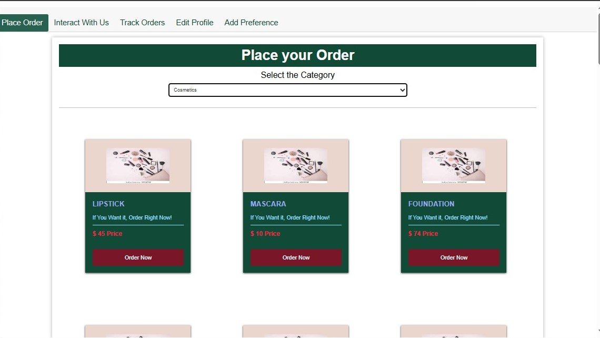
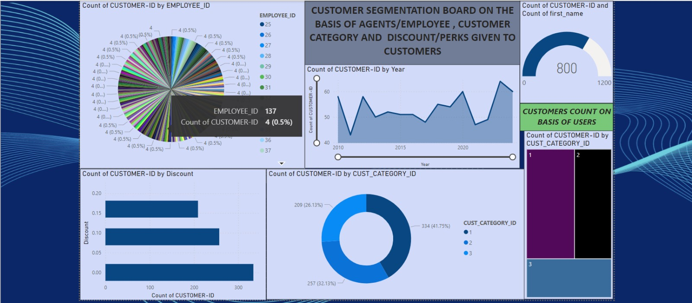
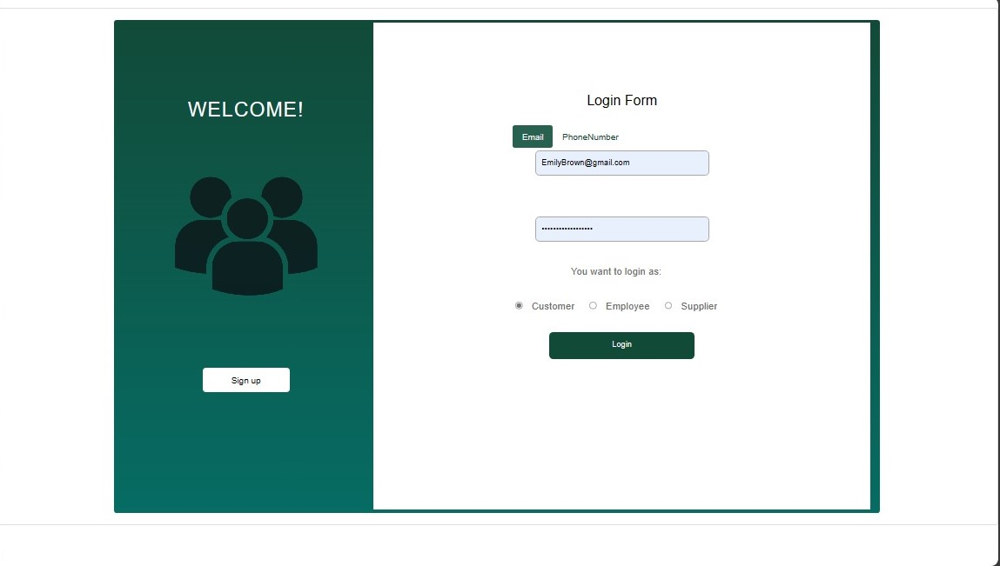

Customer Engagement Analysis



Implemented a comprehensive Customer Engagement Analysis system leveraging SQL for database management and front-end technologies such as HTML and CSS. This system is designed to visualize customer data and engagement metrics through interactive dashboards created in Power BI, providing valuable insights for informed business decisions. Key features and functionalities include:
- SQL Database Management: Utilized SQL for efficient database management, including data storage, retrieval, and manipulation to ensure accurate and up-to-date customer information.
- Front-End Design: Developed a user-friendly front end using HTML and CSS, allowing for seamless interaction with the database and displaying data in an accessible format.
- Interactive Dashboards: Created dynamic and interactive dashboards in Power BI to visualize customer data and engagement metrics, facilitating easy interpretation and analysis.
- Data Visualization: Employed various visualization techniques in Power BI, such as charts, graphs, and tables, to represent customer engagement trends and patterns effectively.
- Business Insights: Provided valuable insights into customer behavior, preferences, and engagement levels, aiding in strategic decision-making and improving business outcomes.
- Responsive Design: Ensured that the front-end design is responsive and compatible with different devices, enhancing accessibility for users.
- Integration and Automation: Integrated data from various sources and automated data updates to ensure that the dashboards reflect real-time information.
This project showcases proficiency in SQL, web development, and data visualization, highlighting the ability to create robust systems that support data-driven business strategies.